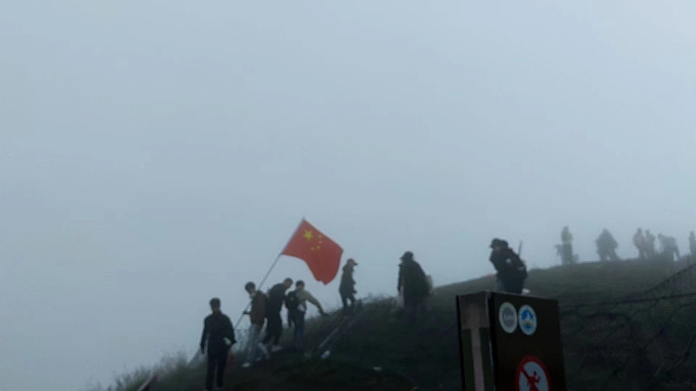
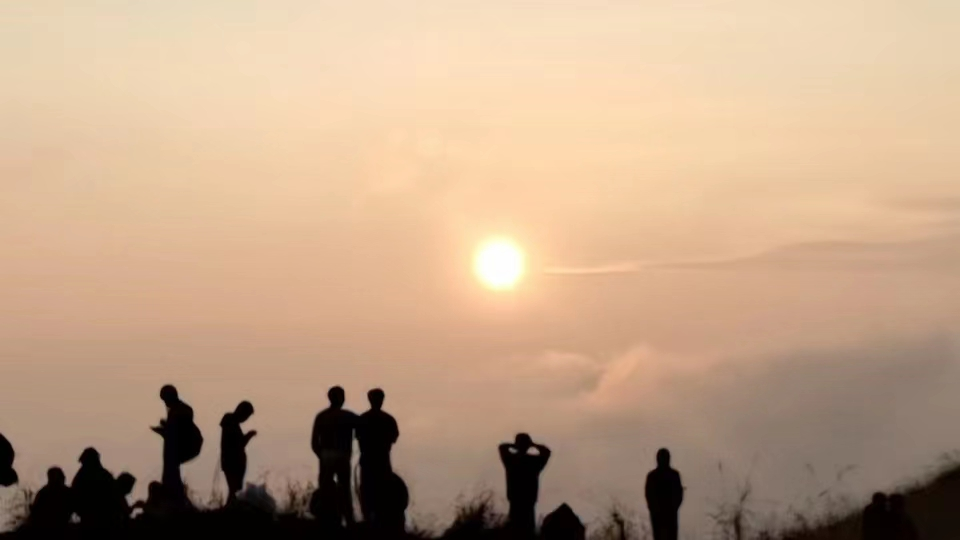

-
简介目录
夜爬准备中
夜色渐浓，微风拂过脸颊，带着一丝山间的清新与凉意。我站在武功山脚下，仰望那巍峨的山峰，心中充满了对未知的期待与兴奋。
周围的空气中弥漫着泥土和草木的香气，偶尔还能听到远处传来的虫鸣和树叶的沙沙声。我深深地吸了一口气，感受着这来自大自然的馈赠。
山脚下，人声鼎沸，热闹非凡。游客们如潮水般涌动，络绎不绝。山脚下的小径两旁，摆满了各式各样的小摊，摊主们热情地叫卖着自家的特色手工艺品和地道小吃，空气中弥漫着诱人的香气和商贩们嘈杂的吆喝声。
日出前
清晨，我独自站在山顶，四周被一片朦胧的晨雾轻轻环绕。微风拂过，带来一丝丝清凉的空气，仿佛是大自然在唤醒沉睡的万物。我抬头望向东方，只见天边渐渐泛起一抹淡淡的鱼肚白，那是日出的前奏。
随着时间的推移，天边的色彩愈发丰富起来，从淡黄到橙红，再到深邃的蓝紫，仿佛一幅巨大的油画在缓缓展开。我的心也随之变得激动起来，期待着那激动人心的瞬间。
缆车下山
随着缆车继续下降， 山谷间的溪流和瀑布逐渐清晰可见。 它们发出潺潺的流水声， 仿佛在诉说着大自然的神奇故事。 偶尔， 一阵清风吹过，带来了山花和草木的香气，让人心旷神怡。
坐在缆车上， 我可以尽情地欣赏这些美丽的景色， 同时也享受着片刻的宁静与放松。 缆车缓缓下滑的过程中， 我感受到了时间的流逝和空间的转换， 仿佛置身于一个梦幻般的世界。这种感觉是如此美好，让人忍不住想要沉浸其中，享受这难得的宁静时光。
由于海拔变化过快，导致气压变化过快，我甚至出现了耳鸣的现象。
晨雾中
清晨，山峦被一层轻纱般的晨雾轻轻笼罩。雾气缭绕，像是大自然的画笔在山间挥洒出了一幅朦胧的水墨画。山峰在雾中若隐若现，仿佛害羞的少女用轻纱遮住了脸庞，只露出隐约的轮廓。
微风拂过，晨雾轻轻摇曳，如同仙子翩翩起舞的裙摆。空气中弥漫着湿润的气息，带着草木的清香和泥土的芬芳，令人心旷神怡。在这静谧的早晨，山间的一切仿佛都沉浸在一种神秘而宁静的氛围中。
日出啦！
终于，一轮红日缓缓从地平线上升起，它的光芒逐渐驱散了周围的雾气，将整个世界都染成了金黄色。那光芒是如此温暖而耀眼，让人忍不住想要伸手去触摸。在这一刻，我仿佛能感受到太阳的呼吸和心跳，那是一种充满生命力和活力的力量。
